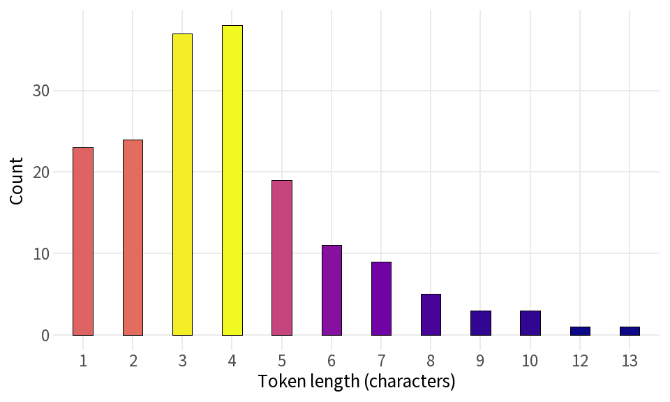
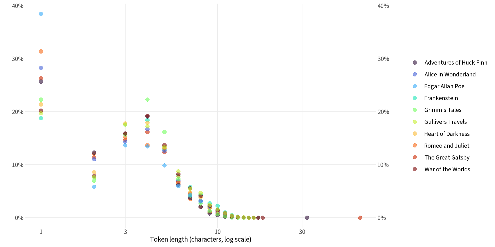

baseurl <- "https://www.gutenberg.org/cache/epub/"
books <- data.frame(
code = c("84", "64317", "11", "1513", "76",
"219", "2591", "2148", "36", "829"),
title = c("Frankenstein", "GreatGatsby", "AliceWonderland", "RomeoJuliet", "HuckFinn",
"HeartDarkness", "GrimmsTales", "EdgarAllenPoe", "WarOfTheWorlds", "GulliversTravels"),
label = c("Frankenstein", "The Great Gatsby", "Alice in Wonderland", "Romeo and Juliet",
"Adventures of Huck Finn", "Heart of Darkness", "Grimm's Tales", "Edgar Allan Poe",
"War of the Worlds", "Gullivers Travels"))
gpt2 <- tok::tokenizer$from_file("tokenizer.json")
# tok does not expose token strings, so map IDs to strings via the saved vocab
vocab_map <- jsonlite::fromJSON("tokenizer.json")$model$vocab
id2tok <- setNames(names(vocab_map), unname(vocab_map))
tokens_from_ids <- \(ids) unname(id2tok[as.character(ids)])Frequency Distributions of Token Lengths
50 ML Projects to Understand LLMs — Chapter 2, Project 3
Using the code without reading the book may lead to confusion or errors.
Part 1: Token Lengths in the Stravinsky Passage
GPT-2 uses byte-pair encoding (BPE), which splits text into subword units. Common words get a single token; rarer words and sequences split into multiple shorter pieces. How long are the tokens in a given passage?
We use a short excerpt about Stravinsky’s Pulcinella ballet as a test case — rich vocabulary, proper nouns, and a few non-ASCII characters make it a useful stress test.
txt <- "Pulcinella is a 21-section ballet by Igor Stravinsky with arias for soprano, tenor and bass vocal soloists, and two sung trios. It is based on the 18th-century play Quatre Polichinelles semblables, or Four similar Pulcinellas, revolving around a stock character from commedia dell'arte. The work premiered at the Paris Opera on 15 May 1920 under the baton of Ernest Ansermet. The central dancer, Léonide Massine, created both the libretto and the choreography, while Pablo Picasso designed the costumes and sets. The ballet was commissioned by Sergei Diaghilev, impresario of the Ballets Russes. A complete performance takes 35–40 minutes. Stravinsky revised the score in 1965."
enc <- gpt2$encode(txt)
token_ids <- enc$ids
token_strs <- tokens_from_ids(token_ids)
token_lens <- nchar(token_strs)
cat(sprintf("Words: %d | Tokens: %d | Unique tokens: %d\n",
length(strsplit(trimws(txt), "\\s+")[[1]]),
length(token_ids),
length(unique(token_ids))))Words: 104 | Tokens: 174 | Unique tokens: 129GPT-2 produces more tokens than words, since punctuation and unusual words (proper nouns, non-ASCII characters) get split into multiple subword pieces.
token_df <- tibble(
token = token_ids,
length = token_lens
)
token_df |>
count(length, name = "count") |>
arrange(length) |>
flextable() |>
flextable::set_caption("Frequency of token lengths (in characters) in the Stravinsky passage")length | count |
|---|---|
1 | 23 |
2 | 24 |
3 | 37 |
4 | 38 |
5 | 19 |
6 | 11 |
7 | 9 |
8 | 5 |
9 | 3 |
10 | 3 |
12 | 1 |
13 | 1 |
token_df |>
count(length) |>
ggplot(aes(x = factor(length), y = n, fill = n)) +
geom_col(color = "black", linewidth = 0.3, width=.4) +
scale_fill_viridis_c(option = "plasma") +
labs(x = "Token length (characters)", y = "Count") +
theme(legend.position = "none")
Most tokens are 1–5 characters long. Longer tokens are rare — they typically correspond to common words that GPT-2 has seen frequently enough to encode as a single piece.
Part 2: Token Length Distributions Across Books
Does the token length distribution vary across different texts? We repeat the analysis for all 10 Project Gutenberg books, computing the proportion of tokens at each length.
book_lengths <- purrr::map(seq_len(nrow(books)), \(i) {
url <- paste0(baseurl, books$code[i], "/pg", books$code[i], ".txt")
text <- readLines(url, encoding = "UTF-8") |> paste(collapse = "\n")
enc <- gpt2$encode(text)
lens <- nchar(tokens_from_ids(enc$ids))
tibble(length = lens) |>
count(length) |>
mutate(
prop = n / sum(n),
label = books$label[i]
)
}) |>
list_rbind()ggplot(book_lengths, aes(x = length, y = prop, color = label)) +
geom_point(size = 2.5, alpha = 0.6) +
scale_x_log10() +
scale_y_continuous(labels=percent,
sec.axis=dup_axis()) +
scale_color_viridis_d(option = "turbo") +
labs(
x = "Token length (characters, log scale)",
y = "",
color = NULL
) +
theme(legend.position = "right")
The distributions are strikingly similar across all 10 books — the token length profile is largely a property of the GPT-2 vocabulary and English in general, not of any individual author or text. Short tokens (1–4 characters) dominate, and the proportion drops sharply beyond 6–7 characters.